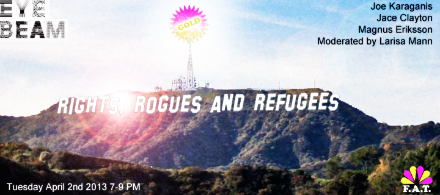

ALL Events are free and open to the public
GOLD Grand Opening Party
April 1st 7:00pm-9:00 pm
Q&A with F.A.T Lab 6-7 pm. Moderated by Lindsay Howard.
{kind=link}
Opening reception. Sekrit DJ set.
Dresscode: Bling
"YOUR ART!!" event and exhibit series
Ongoing: April 1st- 6th
{kind=link}
Visitors on-site and on-line are invited to participate with their digital works. The ‘YOUR ART!!’ golden party necklace, the ‘YOUR ART!!’ artist talk panel karaoke and the ‘YOUR ART!!’ USB Dead Drop show offer a multitude of possibilities to participate at F.A.T. GOLD. Drop your art and go GOLD!
*Your Art!, Dead Drops Exhibition, will be on view until April 20th.
Rights, Rogues and Refugees
April 2nd 7:00 pm - 9:00 pm.
Speakers: Joe Karaganis, Jace Clayton, Magnus Eriksson and moderated by Larisa Mann.

Public Access Events:
The contents of the site are all in the public domain. You may enjoy, use, modify, snipe about and republish all F.A.T. media and technologies as you see fit.
Twitter

FLATTR

FACEBOOK

GITHUB

{kind=link}
Rights, Rogues, and Refugees is a conversation about the law and our culture inspired by the groundbreaking research "Media Piracy in Emerging Economies", the first independent, large-scale study of music, film and software piracy in emerging economies, with a focus on Brazil, India, Russia, South Africa, Mexico and Bolivia. The panelists will discuss the tension between copyright enforcement and copy cultures in post-digital spaces, pirate philosophy beyond entertainment and how the local and the physically located, the object, retains its relevance in a culture of internet and memes. Organized by Geraldine Juárez (F.A.T Fellow/Eyebeam alumni) and Lindsay Howard.
Artists as hackers
April 4th 7:00 pm - 9:00 pm.
Speakers: Evan Roth and and F.A.T. Fellows Aram Bartholl, Tobias Leingruber, James Powderly, and Addie Wagenknecht.
{kind=link}
"The free software and arts communities are filled with interesting people motivated not just by money but by the act of creation and a drive to make meaningful, or at least functional, contributions to society," writes F.A.T. Lab co-founder Evan Roth in his recent essay, Artist Hacker: From Free Software to Fine Art. Inspired by Roth's essay, Eyebeam will host a panel on Thursday April 4 from 7:00pm-8:30pm called Artists as Hackers. The discussion brings together Roth and F.A.T. Fellows Aram Bartholl, Tobias Leingruber, James Powderly, and Addie Wagenknecht for a look at how hacker culture has influenced a new generation of artists.
WifiTagger router hacking workshop
April 3rd 7:00 pm - 9:00 pm.
with Addie Wagenknecht.
{kind=link}
BYO (build/hack your own) wifitagger and go on a dropping field trip with Addie of FAT around Chelsea … A TP-Link WR741ND router is included if you RSVP asap (or you can bring your own openwrt friendly modem and just show up). Bonus if you bring a camera to document our moments together. .. Basic understanding of code is appreciated, fearlessness of breaking electronics or climbing walls never hurts. To sign up, email addie@nortd.com.
PUBLIC ACCESS
{kind=link}
F.A.T. Public Access, produced by Bennett Williamson and Jamie Wilkinson.
F.A.T. Public Access, an audio-visual program produced by F.A.T. Fellows Jamie Wilkinson and Bennett Williamson, will stream live from Eyebeam throughout the week. The show will include interviews with the artists, YouTube show & tell, visual effects, jam sessions, bootleg movie screenings, documentation of public events, and more! Check the Live section for the live stream, program guide, and announcements as they become available.
Forgotten histories of the internet
April 2nd 5:00 pm - 7:00 pm.
Speaker: Kevin Driscoll.
{kind=link}
Internet histories typically begin with the ARPANET in 1969 and leapfrog to the web in 1990. Cool story, no doubt, but so narrow! In this session, we'll be tracing an alternative history of the internet from the coast-to-coast amateur radio relay networks of the 1910s to the transnational bulletin-board systems of the 1980s.
Long Cable
April 3rd 9:00 pm - 10:00 pm.
by Eric "Ricky" Laska
{kind=link}
Eric Laska is an artist whose concern lies in a critical approach to sound. Recent works include Vigilance Improvisations, a series of structured frameworks for improvising electronic musicians, Redundancy Spaces, online installations of sound from data centers, and The Long Cable, a multi-purpose 500 foot XLR cable. He edits the website Lateral Addition (lateraladdition.org).
At FAT GOLD, Laska will demonstrate the capabilities of the Long Cable through a walking, cable-slacked interview and accompanying performance.
MOVIE NIGHTZ
April 2nd- 5th 12 - 2 am.
{kind=link}
F.A.T. GOLD Residency Farewell Party
More info TBA
{kind=link}
Come party with F.A.T. Lab! Large bar! Food trucks! DJs and performances all night! Live visuals! All night! Go GOLD! All night!
artsec Meetup: F.A.T. GOLD Edition
April 11th 6:00 pm - 8:00 pm.
organized by Kyle McDonald
We're trying to answer the question: how can artists work with security researchers to use exploits most responsibly, effectively, and critically? Besides having discussions on this list, we also meet in NYC about once a month. We're looking for a balance of short presentations, skill sharing, and brainstorming that connects hackers and artists. Space is limited. Please RSVP to kyle@kylemcdonald.net. | http://groups.google.com/group/artsec/
F.A.T. GOLD Exhibition Closes
Saturday April 20th
FLATTR
VIMEO
GITHUB
FUCK FLICKR